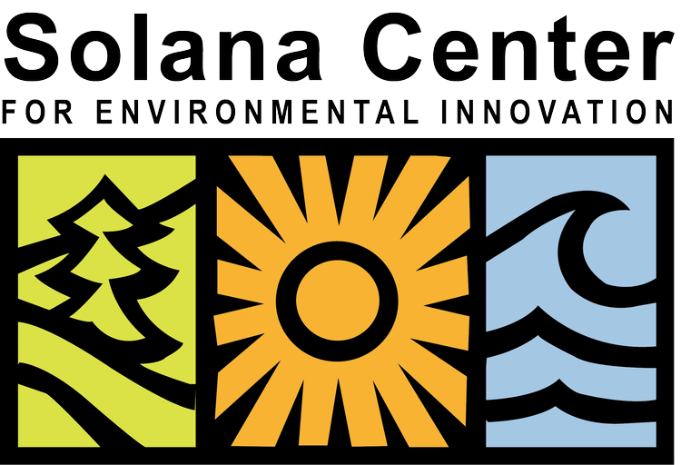
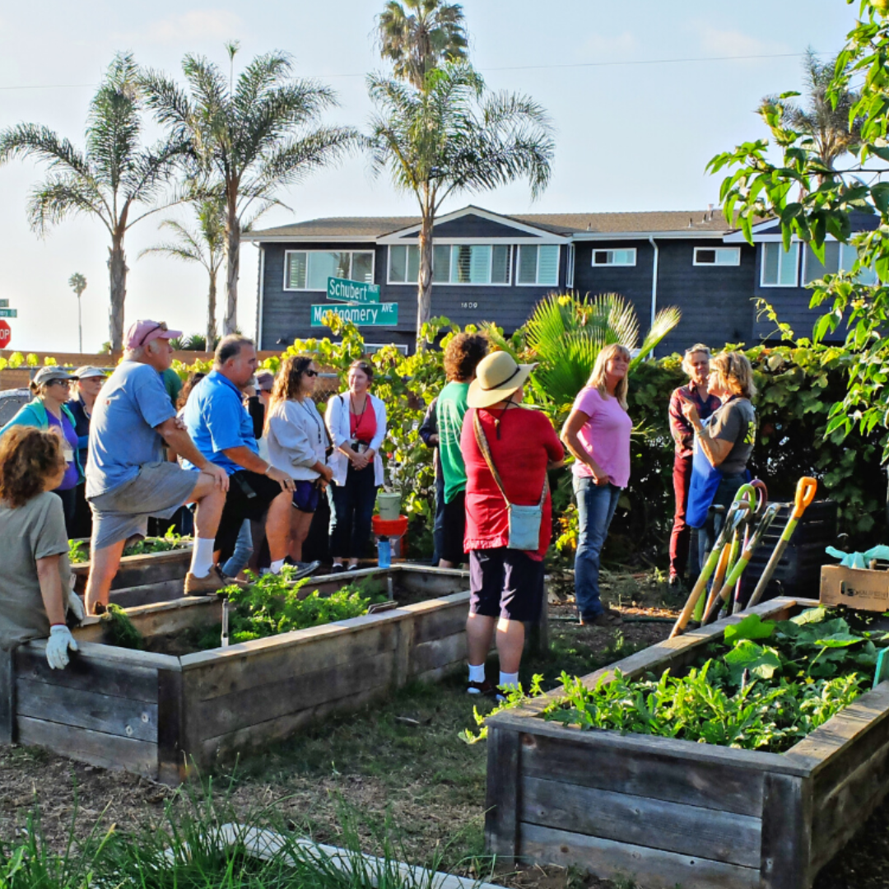

A local match week
A donor or business could offer a time-limited match. Publish the match terms and funding cap before inviting gifts.

Making the possibleSAN DIEGO ROOTS. A CIRCULAR FUTURE.
Ideas become skills. Policy becomes local action.
Solana Center helps people, businesses, farms, and local governments put environmental solutions to work.
A community-supported 501(c)(3) nonprofit.

A NEW CHAPTER · OCTOBER 2026
New state funding will help Solana Center expand waste diversion and test models for the region.
01 / FIND YOUR WAY IN
Start with your role. Find practical help, relevant programs, and a next step you can take.
02 / THE CONNECTION IS THE SOLUTION
Explore how it happens. Education, technical help, and local partnerships turn big ideas into steps a community can take.
An overview of how the work connects. This diagram does not represent waste deliveries between named sites.
03 / KNOWLEDGE INTO PRACTICE
From a first compost workshop to a regional food recovery program, find the right place to begin.
Loading programs…
04 / FROM POLICY TO PRACTICE
California’s laws set the direction. Local education, technical assistance, and community participation help put them into practice.
Extended producer responsibility (EPR) assigns producers duties for products and packaging after use, including funding systems for collection and recovery. Packaging and textiles have separate laws, organizations, and schedules. A recycling symbol or a law does not mean a local collection service accepts an item.
CalRecycle’s EPR overview ↗Policy snapshot checked November 7, 2026. Use the linked state sources for the latest rules and your jurisdiction for local requirements.
05 / BUILT HERE. BUILT OVER TIME.
From early recycling efforts to food recovery, soil health, and material reuse, Solana Center’s work has grown with the needs of the region.
06 / POSSIBILITY NEEDS PEOPLE
Practical solutions need lasting support.
Solana Center is a nonprofit. Donors help sustain its work alongside grants, government contracts, consulting, and sponsorships. Your generosity helps keep environmental education and community action moving.
See how support is put to work ↗GIVE TODAY. KEEP POSSIBILITY GROWING.
Make a one-time gift, or give monthly through the Solana Society. Its form also offers other schedules.
Choose your amount and schedule on Solana Center’s donation page. Online gifts use its existing Neon Pay checkout.
Solana Center also lists securities, qualified charitable distributions from an IRA, legacy gifts, and gifts by mail. Use its current instructions and contact its team before arranging a transfer.
Want to contribute your time and skills? Explore current volunteer opportunities.
Volunteer with Solana Center ↗Suggested fundraising ideas for Solana Center to consider. These are proposals, not active campaigns or announced matching offers.
A donor or business could offer a time-limited match. Publish the match terms and funding cap before inviting gifts.
Local shops could invite customers to round up purchases for Solana Center, with clear consent and transparent transfers.
Neighbors, farms, and businesses could pool support for a series of soil, reuse, or repair workshops. Agree the scope and budget with Solana Center first.
Giving options checked November 8, 2026. Gifts are completed through Solana Center or its listed partner.
LET’S MAKE WHAT’S NEXT, TOGETHER.
Learn. Give. Put a good idea to work.
Build a short list of programs to explore with Solana Center.
Services changed in November 2026. The Sustainability Shop is closed. Tool, dishware, and induction-cooktop rentals require online reservations, with Friday pickup and return at St. Andrew’s Church in Encinitas. Check current arrangements before travel.